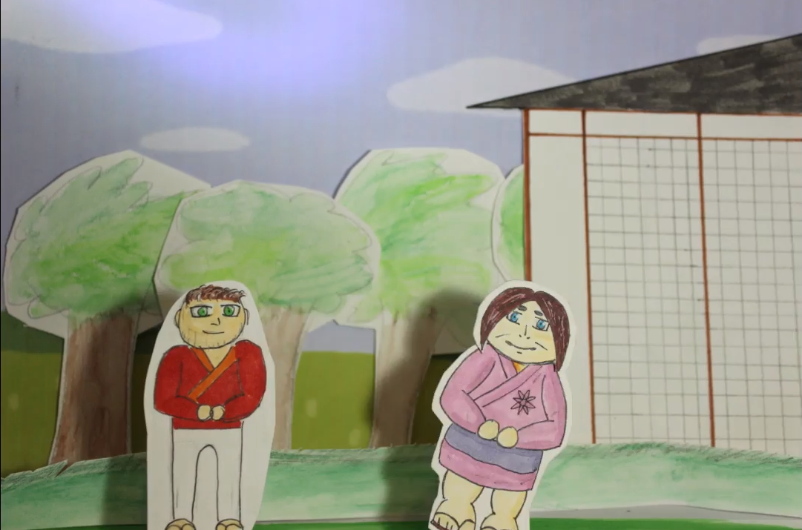

Bonjour.
Je m'appellle Renzo et je vous souhaite la bienvenue sur mon premier site fait main. Ce site vise à présenter tout les travaux qui ont un rapport avec les sujets abordés dans le programme que j'ai pu réaliser jusqu'ici.
J'ai toujours eu de l'intérêt vis-à-vis des sujets au programme et j'espère sincèrement que ce petit plus fera la différence et vous convaincra d'accepter ma candidature.
Il y a plusieurs années maintenant, j'ai pu aider ma mère, éleveuse de chien, à créer son site professionnel. Ce site a été créer via Webself, un site simplifiant le processus de création de sites pour que cela soit à la portée de tous
Il y a quelque années, j'ai également pu créer un site sous Wordpress avec mes camarades de première pour notre TPE. Malheuresement ce site n'existe malheuresement plus.
Ci-dessous, quelques productions que j'ai pu réaliser avec Canva pour une association d'entraide pour étudiants de 2020 à 2022 ainsi qu'une infographie.
Lors de mes années de lycée j'ai également pu produire une infographie sous Adobe illustrator similaire à celle dernière pour un projet en SVT (portant sur le SIDA) mais j'ai malheureusement perdu ce document depuis.
Ci-dessous, une vidéo que j'ai réalisée avec d'autres jeunes de la Mission locale il y a quelques mois et une autre que j'ai pu réaliser pendant ma 2ème année de licence LEA.
Amiens
Abbeville
Montreuil-sur-mer